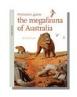

Children's Books
Prehistoric Giants: The megafauna of Australia
BESTSELLER and CBCA shortlisted Step back to a time when giant goannas and marsupial lions stalked the Australian bush. Imagine herds of two-tonne Diprotodon roaming the plains, and flocks of flightless ducks bigger than emus strode around vast inland lakes. Prehistoric Giants is a guide to the Australian megafauna of the Pleistocene—a time when humans shared the land with giants. Prehistoric Giants will reveal an Australia you’ve never seen before.
Prehistoric Marine Life of Australia's Inland Sea
Whitley Award winner and CBCA notable Step back to a time when Australia’s red centre was flooded by a vast shallow ocean, the Eromanga Sea. While dinosaurs stalked the scattered islands that made up the Australian continent, giant marine reptiles ruled the waves. Plesiosaurs and ichthyosaurs swam in an inland sea filled with schools of ammonites, pterosaurs flew overhead and giant carnivorous amphibians lurked in the rivers.
From Dinosaurs to Diprotodons: Australia's Amazing Fossils
Ever met a thingadonta or seen a fangaroo? What about a gigantic titanosaur or a mighty diprotodon? Come on an Aussie fossil adventure and explore prehistoric life down under. Visit the best fossil sites around Australia and learn about the incredible animals that once roamed this ancient land.
John Long: Fossil Hunter
‘Have you ever wanted to be a palaeontologist? Do you love looking for fossils or learning about prehistoric creatures? So did John Long. Find out what it took to turn a childhood passion into a lifelong career.Suited for 10-13 year olds, this book reveals the challenges and achievements of a career in science as part of the Aussie Stem Stars series published by Wild Dingo Press.